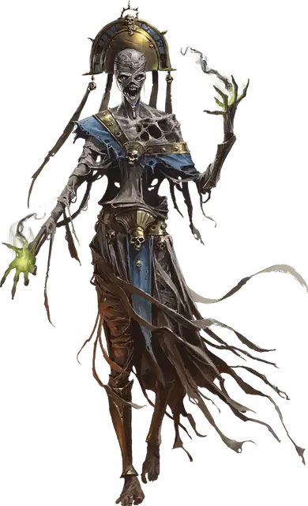

Нафик
Nafik
Средняя Нежить, законно-злая, именной НИП

Класс Доспеха 13 (природный доспех)
Хиты 82 (11к8 + 33)
Скорость 20 футов
| мод | спас | ||
|---|---|---|---|
| СИЛ | 18 | +4 | +4 |
| ЛОВ | 10 | +0 | +0 |
| ТЕЛ | 16 | +3 | +3 |
| мод | спас | ||
|---|---|---|---|
| ИНТ | 10 | +0 | +3 |
| МДР | 16 | +3 | +6 |
| ХАР | 14 | +2 | +2 |
Навыки История +3, Религия +3
Уязвимость к урону огонь
Сопротивление урону дробящий, колющий, рубящий от немагических атак
Иммунитет к урону некротическая энергия, яд
Иммунитет к состояниям испуг, истощение, отравление, очарование, паралич
Чувства тёмное зрение 60 футов, пассивное Восприятие 13
Языки Общий
Опасность 6 (2300 опыта)
Бонус мастерства +3
Особенности
Легендарное сопротивление (2/день). Если Нафик провалит спасбросок, он может вместо этого сделать спасбросок успешным.
Сопротивление магии. Нафик совершает с преимуществом спасброски от заклинаний и прочих магических эффектов.
Восстановление. Будучи уничтоженным, Нафик получает новое тело через 24 часа, если его сердце оставлено нетронутым, и восстанавливает все хиты. Новое тело появляется в пределах 5 футов от сердца Нафика.
Действия
Мультиатака. Нафик может использовать Ужасающий взгляд и совершить одну атаку Разлагающим кулаком или Лучом скверны.
Разлагающий кулак. . Рукопашная атака оружием: +7 к попаданию, досягаемость 5 фт., одна цель. Попадание: 11 (2к6 + 4) дробящего урона плюс 21 (6к6) урона некротической энергией. Если цель — существо, она должна преуспеть в спасброске Телосложения Сл 14, иначе станет проклятой гнилью мумии. Проклятая цель не может восстанавливать хиты, и ее максимум хитов уменьшается на 10 (3к6) за каждые прошедшие 24 часа. Если проклятье уменьшает максимум хитов цели до 0, цель умирает, а ее тело обращается в прах. Проклятье длится до тех пор, пока не будет снято заклинанием снятие проклятия [remove curse] или подобной магией.
Луч скверны. . Дальнобойная атака заклинанием: +6 к попаданию, дистанция 120 фт., одна цель. Попадание: 28 (8к6) урона некротической энергией. Следующий бросок атаки, совершенный по цели до конца следующего хода Нафика, совершается с преимуществом.
Ужасающий взгляд. Нафик выбирает целью одно существо, которое видит в пределах 60 футов. Цель должна преуспеть в спасброске Мудрости Сл 14, иначе станет испуганной до конца следующего хода Нафика. Цель, преуспевшая в спасброске, получает иммунитет к Ужасающему взгляду Нафика на следующие 24 часа.
Использование заклинаний. Нафик накладывает одно из следующих заклинаний, используя Мудрость в качестве базовой характеристики (Сл спасброска 14):
• Неограниченно: чудотворство [thaumaturgy]
• 2/день каждое: приказ [command], тишина [silence]
• 1/день: нашествие насекомых [insect plague]
Описание
При жизни Нафик был верховным жрецом Амон Са, последнего фараона страны Бакар. Нафик был верным подданным и пользовался уважением Амон Са и младших жрецов в свите фараона. Когда Амон Са умер, Нафик и группа жрецов, согласно традиции, заперлись в гробнице фараона, дабы совершать священные обряды, принимая пищу и подношения извне.
Со временем Нафик стал завидовать Амон Са. «Почему фараон может наслаждаться вечным блаженством в загробном мире, когда как его жрецы обречены доживать остаток жизни в заточении его пирамиды?» — подумал он. В гневе Нафик обратился к нечестивым гримуарам, ища запретные ритуалы, которые, как он надеялся, могли научить его тайнам вечной жизни.
Когда плодородие земель Бакара иссякло, верующие перестали приносить подношения к гробнице Амон Са. Угроза голодной смерти нависла над Нафиком и его жрецами. Отчаявшись, Нафик провел над собой и своими товарищами непродуманный ритуал, превратив их и себя в Нежить. Бессердечный и развращенный злом, Нафик ныне правит верхними залами пирамиды Амон Са и жрецами, которых тот приговорил к одушевленной вечности.